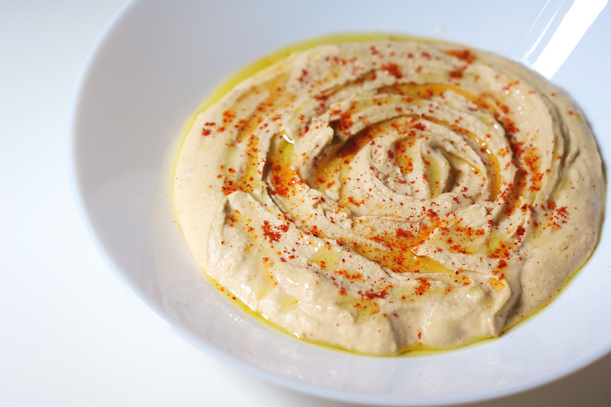

A Quick Hummus Recipe
This is a recipe for how to make the perfect humms.
INGREDIENTS
INSTRUCTION
- Remove the skin from the garlic, and chop coarsely
- Remove all the seeds and stalk from the pepper, and chop coarsely
- Add all the ingredients into a food processor
- Process all the ingredients into a paste
- If you want a coarse "chunky" hummus, process it for a short time
- If you want a smooth hummus, process it for a longer time
For a different flavour, you could try blending in a small measure of lemon
and coriander, chili pepper, lime and chipotle, harissa and mint, or spinach and feta cheese.
Experiment and see what works for you.
STORAGE
Refrigerate the finished hummus in a sealed container. You should be able to use it for about a
week after you've made it. If it starts to become fuzzy, you should definitely discard it. Hummus is suitable for freezing;
you should thaw it and use it within a couple of months.
Pictures of tasty hummus for you to look at
